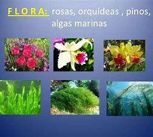

Pagina Principal
Animales en Honduras
Parque nacional la Tigra
Biosfera del río Plátano
La Flora de Honduras es muy diversa y bella, gracias a la ubicación geográfica de Honduras permite que su naturaleza brinde un hábitat adecuado para la flora y fauna.
Honduras es un país Centroamericano muy privilegiado porque esta ubicado dentro de los trópicos y gracias a eso hay un clima agradable y muchos ecosistemas con belleza natural incomparable y esto hace un hábitat perfecto para la flora de Honduras.
Muchas especies de plantas están en peligro de extinción por eso en Honduras hay áreas protegidas para conservar sus diferentes tipos de ecosistemas y toda su flora, el clima de Honduras es tropical gracias a el tenemos una biodiversidad la mas alta de Centroamérica.
En Honduras hay muchos ecosistemas que son los principales paraísos para la flora, los bosques lluviosos tropicales son unos de los mas impresionantes ecosistemas hondureños.
Allí habita la mayor parte de la flora de Honduras por su clima húmedo y tropical, en esa zona es perfecta para las plantas ya que llueve mucho pero siempre tiene un clima muy agradable.
La variedad de flora de Honduras varia dependiendo de las zonas en que se encuentre, por ejemplo:
Zona lluviosa Tropical
Cedro Real (Cedrela mexicana)
Cedro Común (Cedrela odorata)
Caoba (Swetonia mahogoni L.)
Arbol de María (Calophyllum brasiliense)
Cortés (Tabebuia guayacan)
“Espavel” o Mijao (Anacardium excelsum)
Guayabo (Guayabón) o (Tarminalia amazonia) y muchos otros.
Zona Costera
Palmeras
Plantas de algodon
Arboles de pacaya
Arboles frutales y florales
Plantas medicinales como la achicoria, apazote, balsamo de tolu, y muchos mas
Bosque Nublado
Roble Amarillo
Pino ocote
Quina
Ciprés
Orquídeas
Helechos Arborescentes y muchos mas.
